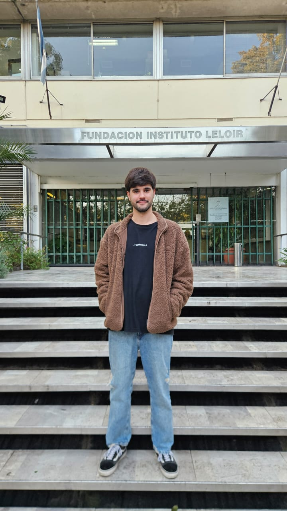
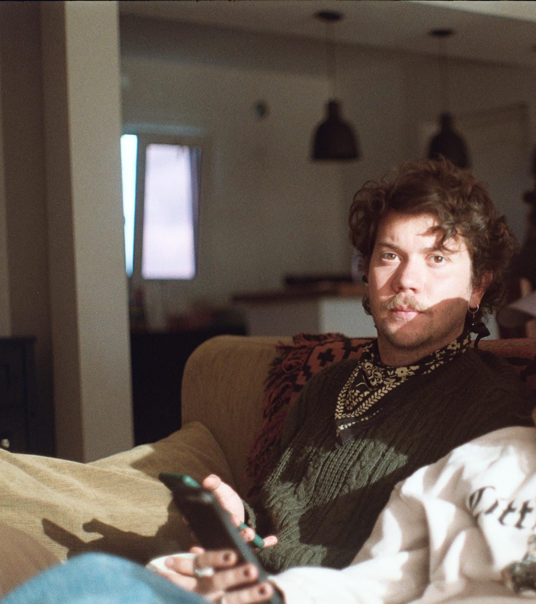
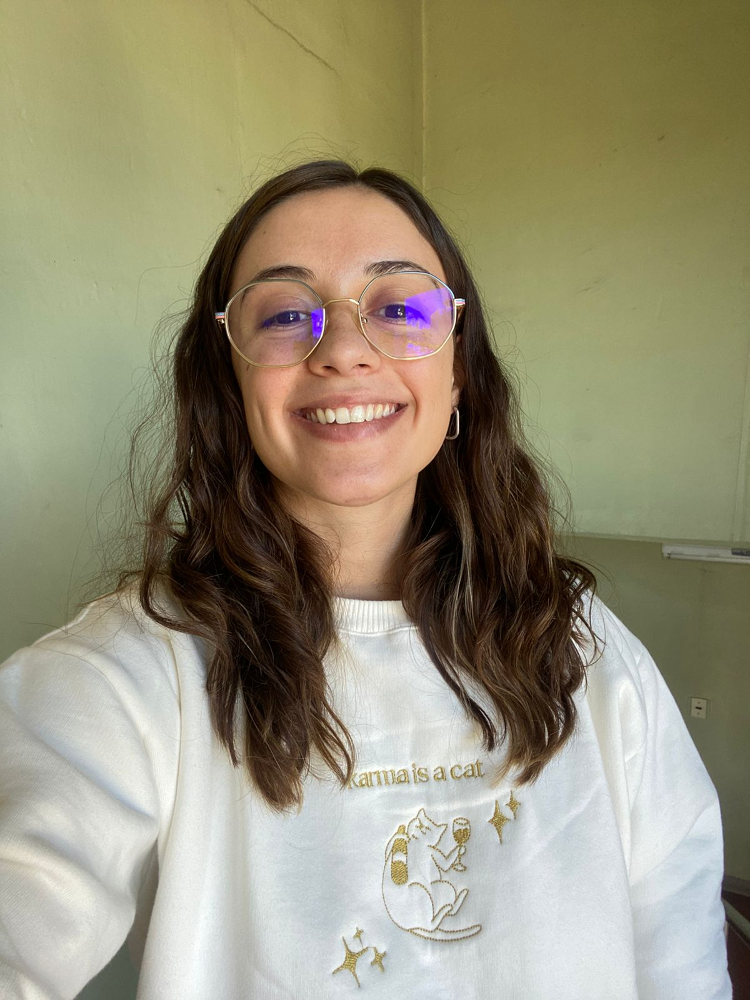
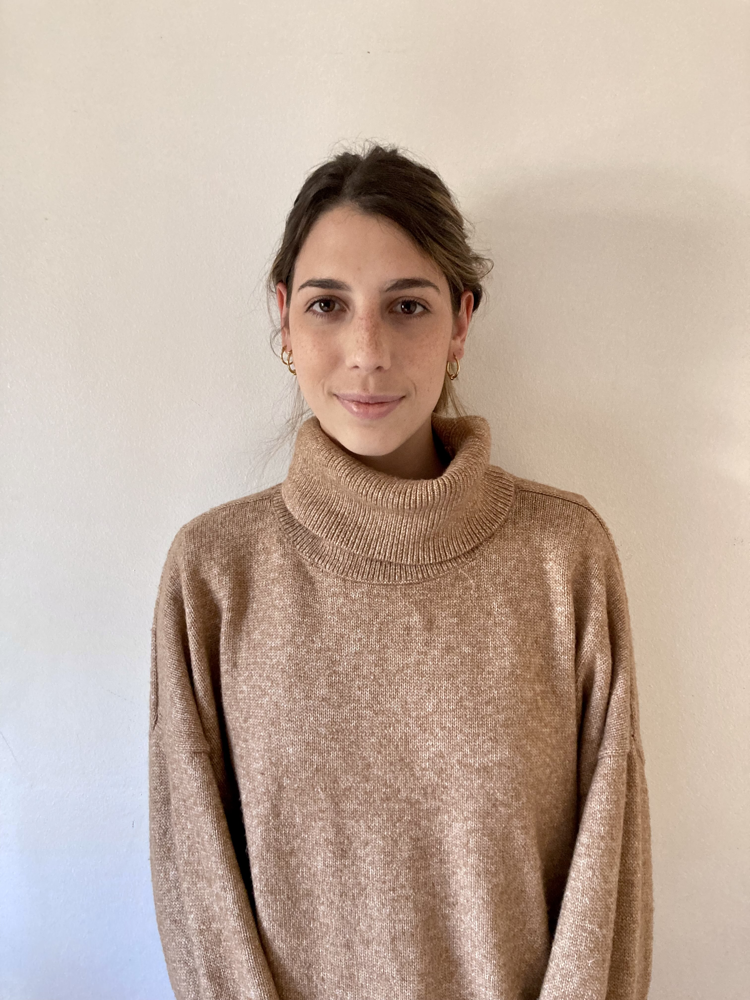
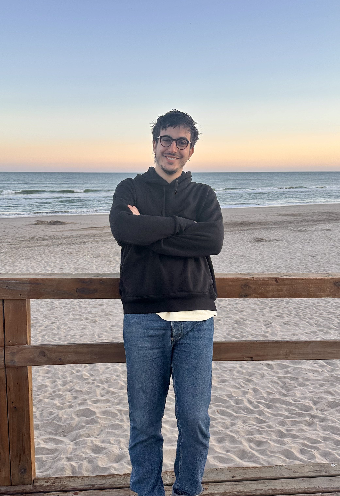
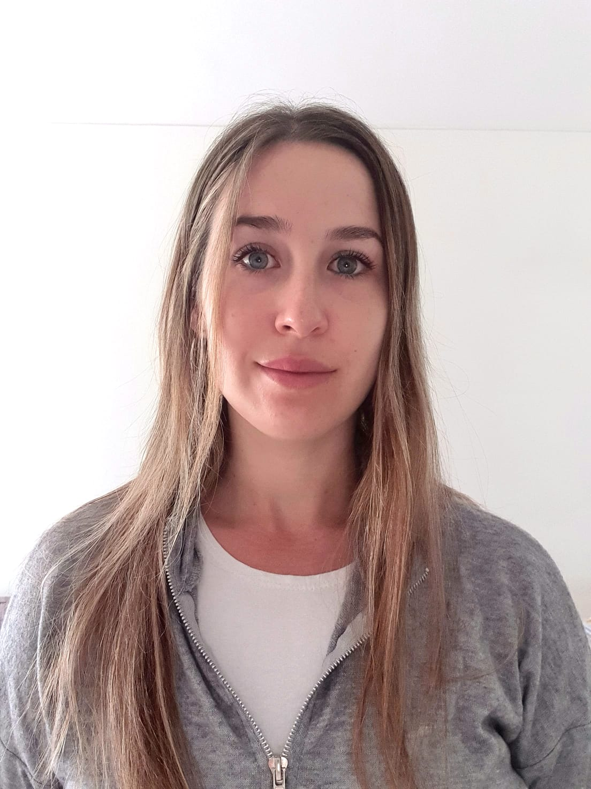
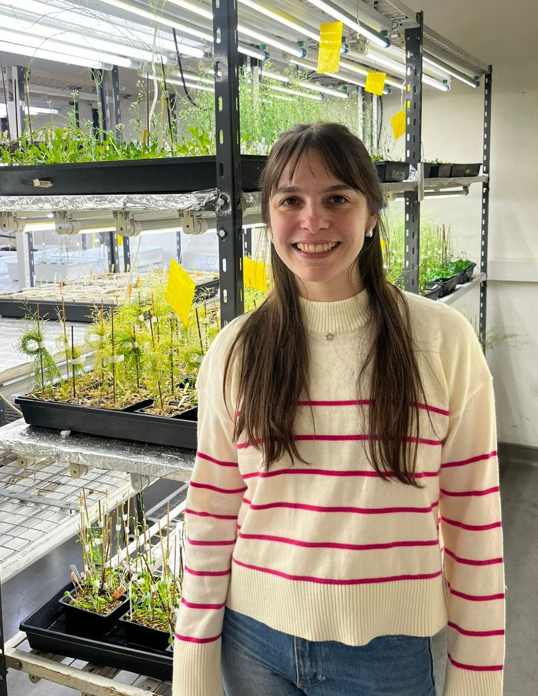
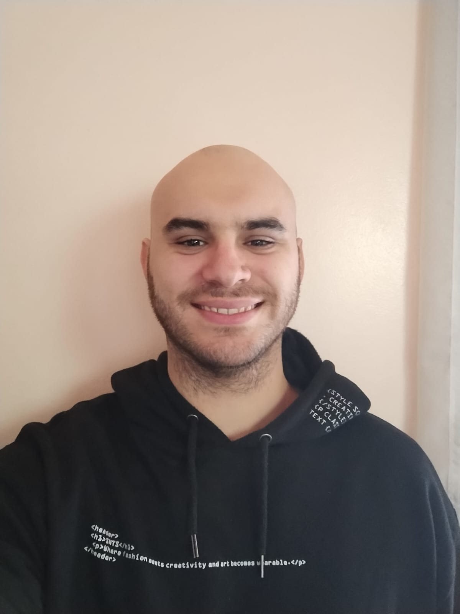

Tomás Peters
Presidente y co-fundador de la AJI. Licenciado en Biotecnología y Biología Molecular (UNLP), becario doctoral CONICET, docente en la UNLP y estudiante de doctorado en el Laboratorio de Biología Celular del ARN (FIL - UBA).
La Agrupación de Jóvenes Investigadores (AJI) es una organización sin fines de lucro que busca generar un espacio de charla, reflexión y discusión para estudiantes de doctorado, postdoctorado e investigadores jóvenes en Argentina, con un formato de reuniones anuales.
Nuestra misión se basa en una iniciativa inédita que busca consolidar un espacio propio, horizontal y federal para investigadores/as en etapas de formación: becarios/as doctorales, posdoctorales, investigadores/as jóvenes y estudiantes avanzados/as de grado de todo el país.
Comité fundador, organizador y científico:

Presidente y co-fundador de la AJI. Licenciado en Biotecnología y Biología Molecular (UNLP), becario doctoral CONICET, docente en la UNLP y estudiante de doctorado en el Laboratorio de Biología Celular del ARN (FIL - UBA).

Vicepresidente y co-fundador de la AJI. Licenciado en Biotecnología y Biología Molecular (UNLP), becario doctoral CONICET, docente en la UNLP y estudiante de doctorado en Structural Bioinformatics Group (UNQ).

Miembro del comité científico. Licenciada en Biotecnología (UADE), becaria doctoral CONICET y estudiante de doctorado en el Laboratorio de Genética del Desarrollo Neural (FIL - FCEN UBA).

Miembro del comité científico. Licenciada en Biología (FCEN UBA) y actualmente becaria doctoral CONICET en el Laboratorio de Genética del Desarrollo Neural (FIL - FCEN UBA).

Miembro del comité científico. Licenciado en Biología (FCEN UBA) y actualmente becario doctoral en el Laboratorio de Biología Celular del ARN (FCEN UBA).

Miembro del comité científico. Licenciada en Ciencias Biológicas (FCEN UBA). Actualmente estudiante de doctorado en el Laboratorio de Biología Molecular de Plantas (Fundación Instituto Leloir).

Miembro del comité científico. Licenciada en Biotecnología (UNL), becaria doctoral CONICET y desarrolla su tesis en el Laboratorio de Biología Molecular de Plantas (FIL/IIBBA-CONICET).

Miembro del comité científico. Licenciado en Biotecnología y Biología Molecular (UNLP), becario Agencia en el Laboratorio de Estudio de Secreción (FCEN UBA) y docente de la UNLP.
La AJI se respalda en un código de conducta con especial énfasis en el respeto y el respaldo mutuo.
Disponible aquí